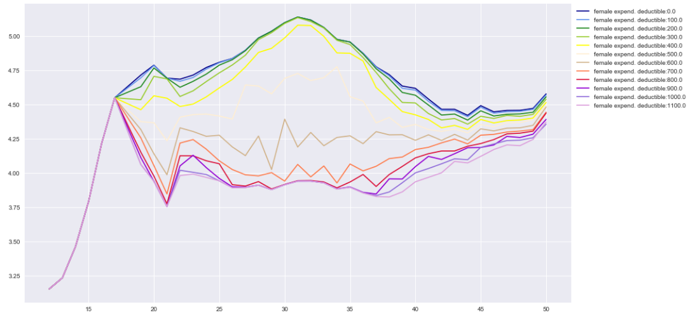

A Model for Cost-Sharing in Healthcare
Jan Boone, Minke Remmerswaal, and Bram Wouterse
Table of Contents
Introduction
Introduction
- objective:
- calculate effects of different cost-sharing schemes on healthcare spending
- difficulties:
- after the reform, the Netherlands has only featured deductible and rebate
- empirical literature too specific
- theoretical models hard to estimate
- our aim is to develop a model which solves both points
Why Bayesian?
- distributions of healthcare spending are important for cost-sharing schemes
- fraction of people affected by an increase in the deductible from 150 euros to 350 euros depends on the distribution, and varies by age and gender
- simulation should also cover e.g. a "donut"
- Bayesian approach can easily work with distributions

Model
Total healthcare expenditure in a year
- \(H(z)\): distribution of healthcare expenditure in a year
- where \(z=x+y\)
- \(x\): exogenous, not affected by cost-sharing, high-value care
- if you break your leg, you get "plastered up"
- \(y\): endogenous, affected by cost-sharing
- if you have a running injury, perhaps you skip the physiotherapy
Idea of the model
- "at the start of the year", person \(i\) is offered one \(y\) treatment with value \(v_y\) and expected out-of-pocket cost \(OOP\)
- \(i\) accepts if \(v_y\) exceeds expected \(OOP\)
- \(OOP\) depends on:
- \(f(x)\) ex-ante distribution of exogenous healthcare expenditure
- \(g(y)\) cost distribution of offered treatment \(y\)
- cost-sharing scheme
- for a deductible \(D\), \(OOP\) equals \(\int_0^{+\infty} \int_0^{+\infty} (\min\{x+y,D\}-\min\{x,D\})f(x)g(y)dxdy\)
Estimation
Parametric specification
- "everybody knows" that healthcare expenditures are log-normally distributed:
- log transformation of positive healthcare costs are normally distributed
- we model the probability on zero healthcare costs
- benefits of log-normal distribution:
- analytical expression for \(OOP\) with deductible (estimation)
- analytical expression for distribution of \(x+y\)
Example

Figure 2: Illustrative distributions for positive healthcare costs (left in levels, right in logs)
Four components
- define categories by age and gender (current model: \(92*2\))
- each category has a distribution of (log) healthcare costs \(z\)
- distribution \(z\) is mixture of 4 components:
- \(x \sim N(\mu_x,\sigma_x)\), with age and year FE by gender
- same for \(y\)
- \(\psi\) is probability \(x\) treatment is offered (\(x > 0\)), with age FE by gender (and year FE women 21+)
- \(\phi\) is same for \(y > 0\)
- people in each category know their \(\psi,\phi\) and their distributions of \(x,y\)
- calculate \(OOP_y\) per age, gender, year with \(x,y,\psi,D\)
- compute probability \(F\) that \(y\) is rejected (\(v_y < OOP\))
- \(v_y \sim N(\mu,\sigma)\) by age and gender
Probabilities
- calculate probability for each mixture component
| component | probability |
| \(x=y=0\) | \((1-\psi)(1-\phi + \phi F)\) |
| \(x>0=y\) | \(\psi*(1-\phi + \phi F)\) |
| \(y>0=x\) | \((1-\psi)\phi(1-F)\) |
| \(x,y>0\) | \(\psi \phi (1-F)\) |
Technique
- specify priors for parameters:
- 10,000,000 observations per year
- on average 50,000 observations per category per year
- estimation with variational inference (ADVI, Auto-diff Variational Inference) and minibatches
- standard Markov Chain Monte Carlo methods (Metropolis, NUTS etc.) do not scale well with data size
- python and pymc3 fun to work with
- parameter \(\phi\) has age and gender fixed effects:
ϕ = pm.Deterministic('ϕ', phi[age,sex])
- parameter \(\phi\) has age and gender fixed effects:
- for each age-gender category, we draw 10,000 samples of the model parameters
- for each sample we draw one \(x,y\) and \(z\)
Fit
Fit on average costs by age, year and sex
Left panel: women, right panel: men
QQ plot for 30 year old woman in 2013

Simulations
Deductible (men)

X-axis: age, Y-axis: log expenditure
Deductible (women)

X-axis: age, Y-axis: log expenditure
Zorgkeuzes in Kaart #2
Reestimating ZiK#1
- policy options:
- 5 deductible levels (0, 220, 305, 405, 505 euros)
- 3 coinsurance rates (25%, 50%, 75%) with different stop losses (3x 405, 440, 495, 725 euros)
- 1 donut (start at 300 euros, stop loss of 405 euros)
- 2 two-tier schemes (300 and 320 euro deductible, then 25% coinsurance rate, 400 and 425 euro stop loss)
- first impression:
- bigger healthcare expenditure reductions ('remgeldeffect')
- but in line with empirical work
Graph of reestimated policy options in ZiK#1

Where do we stand
Where do we stand?
- estimation "works" and goes quite fast
- simulations work as well
- simulations slow down when working with 10,000 samples and simulated OOP
- currently, we are testing different priors and specifications of the model and sample
- Marco Alberti will work on a cost-sharing model estimated on public Vektis data
What's next?
- what needs to be ready before or during ZiK#2?
- should we stick to the Vektis data for now, or switch to CBS?